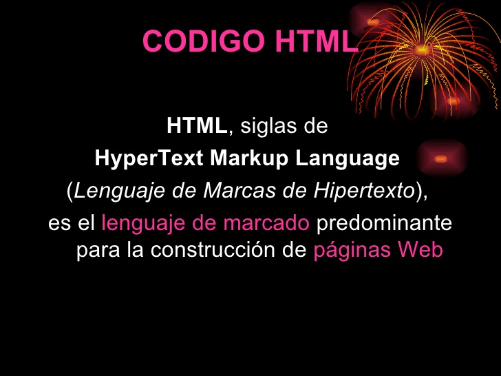

Breve historia de HTML
El origen de HTML se remonta a 1980, cuando el físico Tim Berners-Lee, trabajador del CERN (Organización Europea para la Investigación Nuclear) propuso un nuevo sistema de "hipertexto" para compartir documentos.
Tras finalizar el desarrollo de su sistema de "hipertexto", Tim Berners-Lee lo presentó a una convocatoria organizada para desarrollar un sistema de "hipertexto" para Internet. Después de unir sus fuerzas con el ingeniero de sistemas Robert Cailliau, presentaron la propuesta ganadora llamada WorldWideWeb (W3).
El primer documento formal con la descripción de HTML se publicó en 1991 bajo el nombre HTML Tags (Etiquetas HTML) y todavía hoy puede ser consultado online a modo de reliquia informática.
En 1995, el organismo IETF organiza un grupo de trabajo de HTML y consigue publicar, el 22 de septiembre de ese mismo año, el estándar HTML 2.0. A pesar de su nombre, HTML 2.0 es el primer estándar oficial de HTML.
Versiones de html
El primero en salir fue el HTML 1, sin embargo no fue considerado un estándar, por lo que muchas veces se considera al HTML 2 como la primera versión del HTML.
HTML 2: Presentado en el año de 1995, el HTML 2 es considerado la primera versión del HTML, el cual no soportaba tablas y donde la declaración explícita de los elementos body, html y head es opcional.
HTML 3.2: Esta versión se lanzó en el año de 1997 gracias al organismo de estandarización llamado W3C (World Wide Web Consortium). El cual incorporó los últimos avances de las páginas web como applets de Java y texto que fluye alrededor de las imágenes.
HTML 4.0: Lanzada en 1998. Entre sus novedades más destacadas se encuentran las hojas de estilos CSS, la posibilidad de incluir pequeños programas o scripts en las páginas web, mejora de la accesibilidad de las páginas diseñadas, tablas complejas y mejoras en los formularios.
HTML 4.01: salió a la luz en 1999 como una revisión y actualización de la versión HTML 4.0, por lo que no incluye novedades significativas.
HTML 5: quinta revisión importante del lenguaje básico de la World Wide Web, el cual especifica dos variantes de sintaxis para HTML: el clásico HTML (text/html), y la variante conocida como HTML5 y una variante XHTML conocida como sintaxis XHTML5. Este nuevo estándar aun no es tan utilizado pero su potencial es mucho mayor a las versiones anteriores, el cual incluye interesantes mejoras como nuevos elementos y etiquetas.
Etiquetas
El lenguaje HTML es un lenguaje de marcas, estas marcas serán fragmentos de texto destacado de una forma especial que permiten la definición de las distintas instrucciones de HTML, tanto los efectos a aplicar sobre el texto como las distintas estructuras del lenguaje, a esto se le conocerán como "etiquetas".
Para ver las etiquetes utilizadas en html acceder al siguiente enlace:
Etiquetas utilizadas en html
